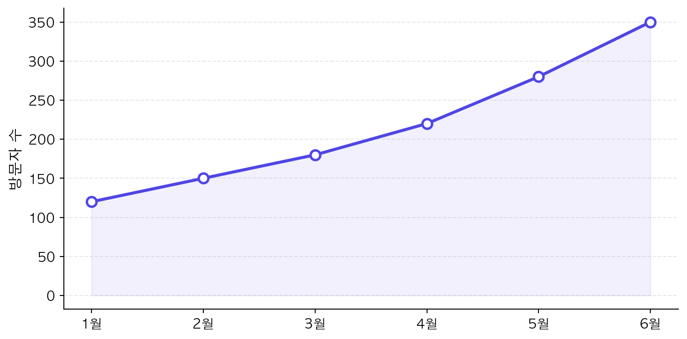
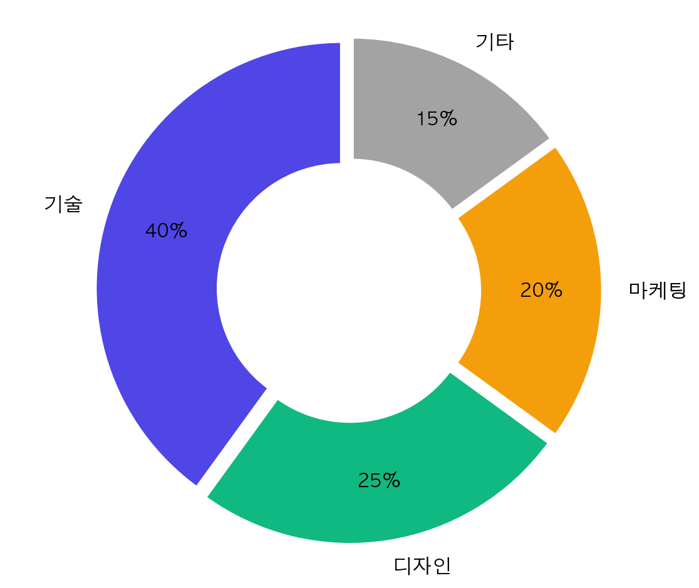

dict(
value = "12,345",
icon = "people",
color = "primary"
){'value': '12,345', 'icon': 'people', 'color': 'primary'}dict(
value = "12,345",
icon = "people",
color = "primary"
){'value': '12,345', 'icon': 'people', 'color': 'primary'}dict(
value = "3.2%",
icon = "graph-up",
color = "success"
){'value': '3.2%', 'icon': 'graph-up', 'color': 'success'}dict(
value = "4분 32초",
icon = "clock",
color = "info"
){'value': '4분 32초', 'icon': 'clock', 'color': 'info'}import matplotlib.pyplot as plt
import matplotlib
matplotlib.rcParams['font.family'] = 'AppleGothic'
matplotlib.rcParams['axes.unicode_minus'] = False
months = ['1월', '2월', '3월', '4월', '5월', '6월']
values = [120, 150, 180, 220, 280, 350]
fig, ax = plt.subplots(figsize=(8, 4))
_ = ax.plot(months, values, marker='o', color='#4F46E5', linewidth=2.5, markersize=8, markerfacecolor='white', markeredgewidth=2)
_ = ax.fill_between(range(len(months)), values, alpha=0.08, color='#4F46E5')
_ = ax.set_ylabel('방문자 수', fontsize=12)
ax.spines[['top', 'right']].set_visible(False)
_ = ax.grid(axis='y', alpha=0.3, linestyle='--')
ax.tick_params(labelsize=11)
plt.tight_layout()
plt.show()
import matplotlib.pyplot as plt
import matplotlib
matplotlib.rcParams['font.family'] = 'AppleGothic'
matplotlib.rcParams['axes.unicode_minus'] = False
labels = ['기술', '디자인', '마케팅', '기타']
sizes = [40, 25, 20, 15]
colors = ['#4F46E5', '#10B981', '#F59E0B', '#A3A3A3']
fig, ax = plt.subplots(figsize=(6, 5))
wedges, texts, autotexts = ax.pie(
sizes, labels=labels, colors=colors,
autopct='%1.0f%%', startangle=90,
explode=(0.03, 0.03, 0.03, 0.03),
pctdistance=0.75,
wedgeprops=dict(width=0.5, edgecolor='white', linewidth=2)
)
for t in texts:
t.set_fontsize(12)
for t in autotexts:
t.set_fontsize(11)
t.set_fontweight('bold')
_ = ax.axis('equal')
plt.tight_layout()
plt.show()